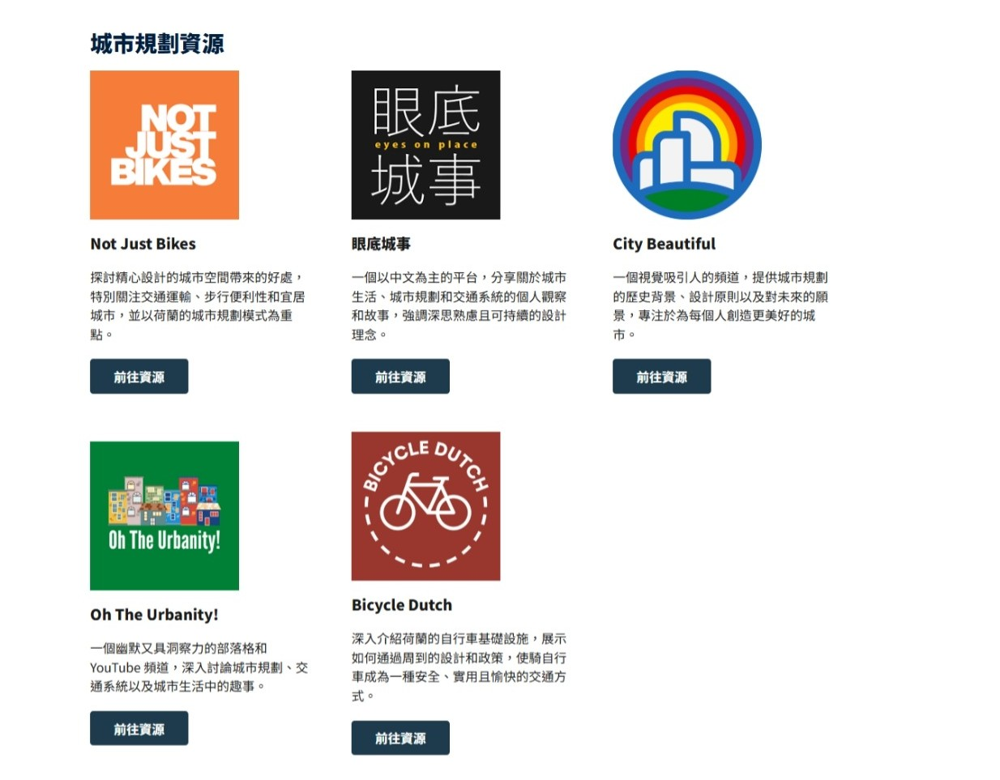
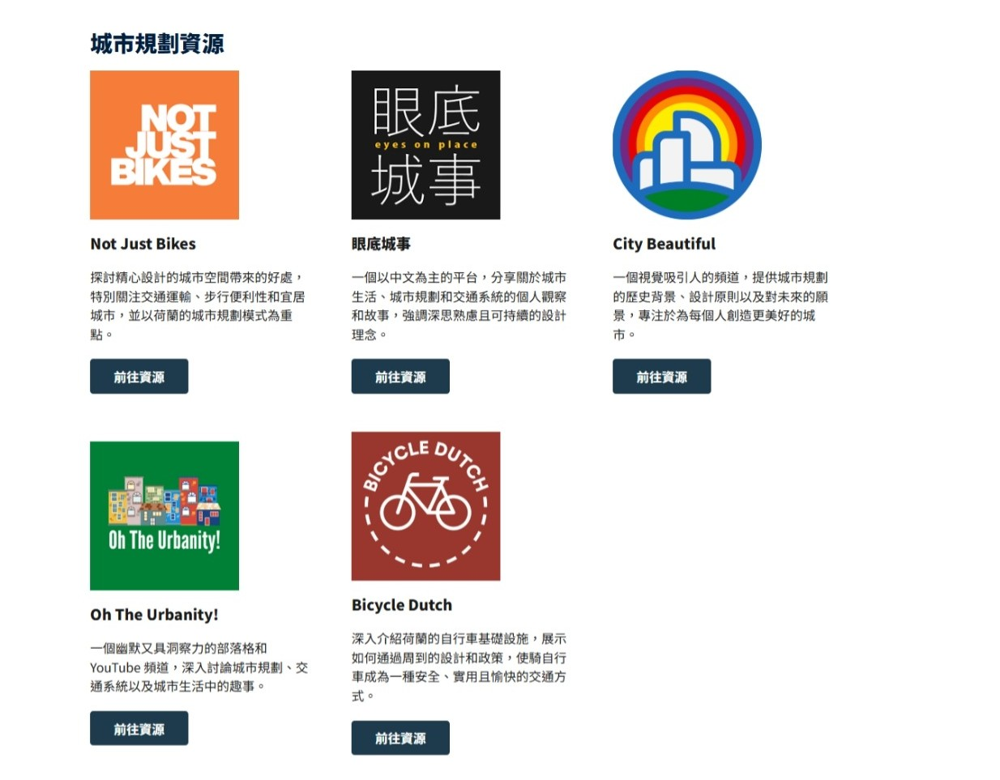
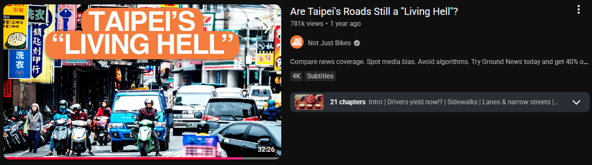

步行臺中
人本交通推廣網站
在 2024 年，我參加了一門名為「數位人文專題」的課程，這門課要求我規劃並完成一個專案，運用我在國立中興大學數位人文學程中所學的所有數位技能。我決定建立一個關於台中步行與自行車基礎建設的網站
這個網站的定位是一個部落格，我可以在上面撰寫與城市議題相關的文章，重點專注於台灣台中，也可能會涵蓋世界各地的案例
 

動機與背景
剛到台中時，我像所有第一次到異國的人一樣，對周遭的一切充滿好奇，覺得一切都很吸引人。對於一個從未離開過越南的年輕人來說，台中看起來格外乾淨、宜人。
住了一兩年後，我慢慢開始注意到台中的一些缺點——也是朋友們經常抱怨的問題：不平整或根本沒有的人行道、混亂的停車情況、奇怪的路口設計等等。
2024 年，我一直關注的知名城市設計 YouTube 頻道 Not Just Bikes 發布了一支影片，介紹他們在台北的旅程，以及台北在行人與自行車基礎建設方面是否有所改善。
這支影片既令人鼓舞，也讓我大開眼界。它揭示了不僅台北，整個台灣仍然存在的許多問題，也讓我開始更仔細地審視自己生活的城市 - 台中。我發現這裡的交通和基礎設施也存在不少問題。
這促使我想要做些事情。當時，我正在參加中興大學的 數位人文學程，於是我決定建立一個關於這個主題的網站，既能提升我的網頁開發技能，也能參與城市發展的討論。
使用技術
- HTML / CSS
- JavaScript（導覽選單、互動）
- Eleventy（靜態網站生成器）
- Netlify（部署）
- Netlify CMS（內容管理）
製作過程
本專案從零開始建構網站結構與樣式， 並隨著內容定位的轉變，多次調整網站架構， 最終採用類部落格形式，提升內容維護與延展性。
在完成基本的 HTML、CSS 與 JavaScript 後， 導入 Eleventy 將網站轉為可擴充的靜態網站， 並透過 GitHub 與 Netlify 進行版本控管與部署。
反思與未來計劃
這個專案讓我同時深化了對人本交通議題的理解， 也實際鍛鍊了前端開發與網站架構規劃的能力。
未來計劃持續優化網站功能， 包含互動機制、內容分類與技術層面的升級， 並逐步發布更多相關文章。